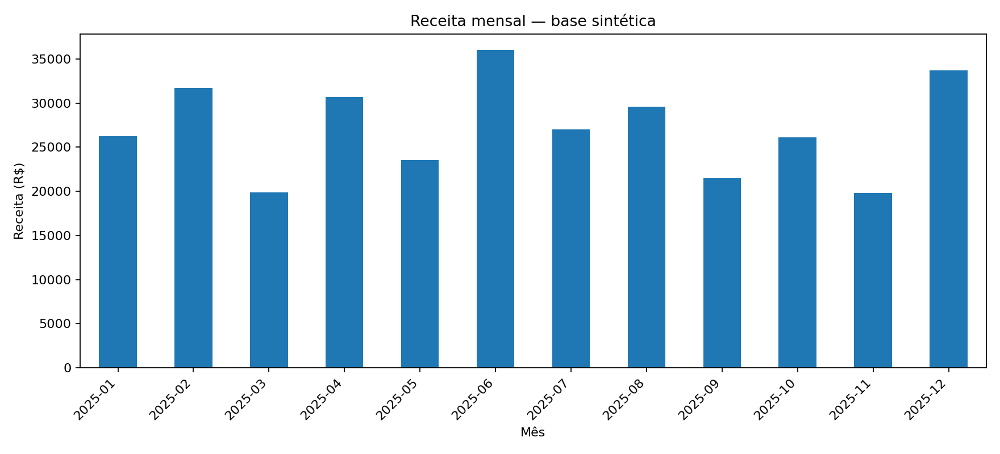
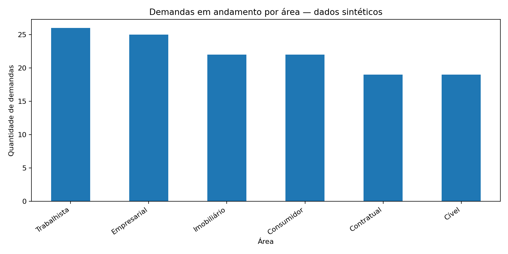

01
PYTHON · PANDAS · SQL
Análise de Varejo

Fluxo de análise exploratória com dados sintéticos de vendas: limpeza, indicadores de receita e margem, cortes por categoria, canal e período.
PORTFÓLIO PROFISSIONAL · JOINVILLE / SC
Sou formado em Administração e Direito, com experiência no setor jurídico desde 2007. Desenvolvo competências em Business Analysis, análise de processos e Data Analytics.
Minha trajetória combina gestão administrativa, operações e experiência jurídica em contextos empresariais. Atuo com investigação de informações, análise documental, contratos, gestão de processos, avaliação de riscos e resolução estruturada de problemas.
Atualmente amplio minha base técnica por meio da Carreira Tech – Trilha Análise de Dados (SCTEC/SENAI), estudando Python, estruturas de dados, NumPy, Pandas, Matplotlib, SQL e fundamentos de NoSQL. Também desenvolvo fundamentos em Java, PostgreSQL e MongoDB.
Os projetos apresentados são estudos demonstrativos com dados sintéticos. Não representam clientes, processos, empresas ou resultados reais.
Estudos práticos para demonstrar raciocínio analítico, tratamento de dados, documentação e compreensão de processos.
PYTHON · PANDAS · SQL

Fluxo de análise exploratória com dados sintéticos de vendas: limpeza, indicadores de receita e margem, cortes por categoria, canal e período.
DATA ANALYTICS · LEGAL OPS

Indicadores de uma carteira inteiramente fictícia de demandas jurídicas, com análise de status, prazos de referência e distribuição por área.
BUSINESS ANALYSIS · BPM
Estudo de um fluxo fictício de triagem, com mapeamento AS-IS/TO-BE, stakeholders, requisitos, user story e critérios de aceite.
Business Analysis · Análise de Processos · Documentação · Gestão de Riscos · Análise Crítica · Requisitos
Python · Pandas · NumPy · Matplotlib · Java (fundamentos)
SQL · PostgreSQL · MongoDB · Fundamentos NoSQL
Direito · Contratos · Compliance · Due Diligence · Legal Operations
Níveis técnicos: fundamentos e formação em andamento. Não apresento essas ferramentas como experiência profissional avançada.
Interesse em oportunidades remotas no Brasil ou híbridas/presenciais em Joinville e região, especialmente em Business Analysis, Processos, Operações, Legal Tech e posições de entrada em Dados.